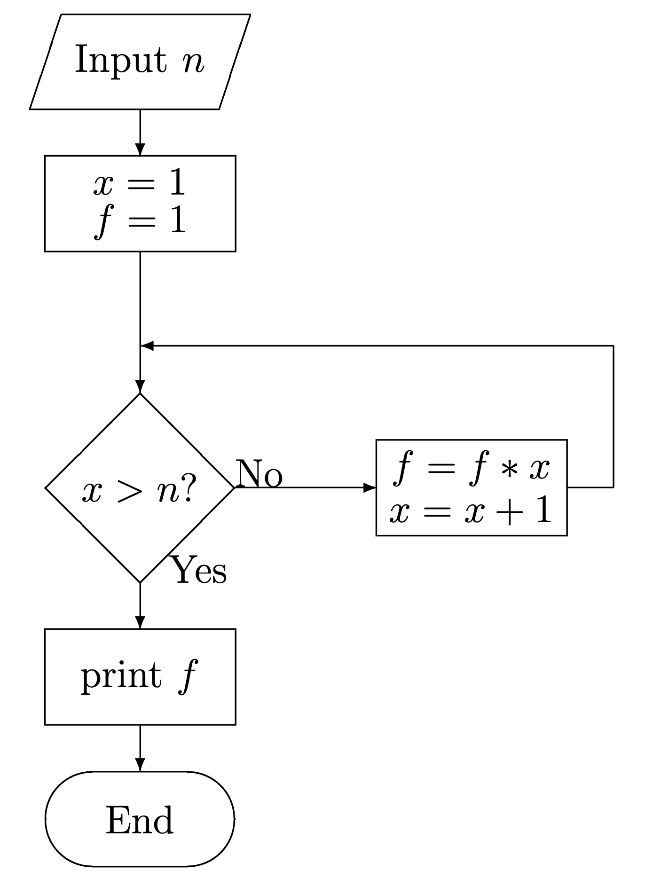
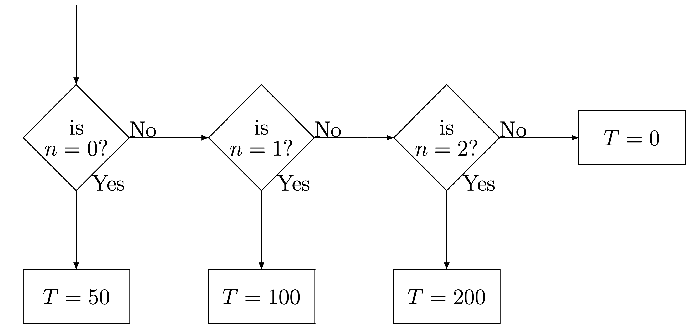

2 Introduction to C – part II
2.1 Loops
The program planck.c that you compiled and ran last time can be used to compute the Planck function (blackbody spectrum) for a given temperature by inputing different values for the wavelength while holding the temperature constant. Instead of running the program multiple times, it is better to do this by introducing a loop into your program. Please read over the section in your textbook on Loops and Conditionals. Let us see how to modify planck.c to include a loop to make our life easier.
#include <stdio.h>
#include <math.h>
int main()
{
double wave,T;
double p = 1.19106e+27;
double p1;
int ni;
printf("\nEnter the temperature in Kelvin > ");
ni = scanf("%lf",&T);
wave = 500.0;
while(wave <= 12000.0) {
p1 = p/(pow(wave,5.0)*(exp(1.43879e+08/(wave*T)) - 1.0));
printf("The Planck function at %7.2f A and %7.2f K is %e\n",
wave,T,p1);
wave += 500.0;
}
return(0);
}Here we have introduced a while loop to evaluate the Planck function at values of the wavelength between 500 and 12000 Å with an interval of 500 Å. The while loop begins with the statement
while(wave <= 12000.0) {and ends with the close bracket
}five lines down. What this means is that the statements in between these two brackets are executed in order multiple times until the condition wave <= 12000.0 is no longer true. Notice that the while loop contains the statement wave += 500.0; which increments wave by 500 every time the statement is executed. Eventually wave will exceed 12000.0 and then the program will exit the loop.
Another type of loop is called a do while loop. We could replace the while loop above with the following statements:
do {
p1 = p/(pow(wave,5.0)*(exp(1.43879e+08/(wave*T)) - 1.0));
printf("The Planck function at %7.2f A and %7.2f K is %e\n",
wave,T,p1);
wave += 500.0;
} while(wave <= 12000.0)This loop functions very similarly to the while loop, except that the condition wave <= 12000.0 is evaluated at the end of the loop instead of the beginning. It turns out that do while loops are almost never used. However, every once in a while it proves to be useful to have the condition evaluated at the end of the loop, for instance when you want to guarantee that the loop will be executed at least once.
Another way of writing this program is to initialize wave as a vector and to use a for loop, as follows:
#include <stdio.h>
#include <math.h>
int main()
{
double T;
double p = 1.19106e+27;
double p1;
double wave[24] = { 500.0, 1000.0, 1500.0, 2000.0, 2500.0,
3000.0, 3500.0, 4000.0, 4500.0, 5000.0,
5500.0, 6000.0, 6500.0, 7000.0, 7500.0,
8000.0, 8500.0, 9000.0, 9500.0,10000.0,
10500.0,11000.0,11500.0,12000.0};
int ni,i;
printf("\nEnter the temperature in Kelvin > ");
ni = scanf("%lf",&T);
for(i=0;i<24;i++) {
p1 = p/(pow(wave[i],5.0)*(exp(1.43879e+08/(wave[i]*T)) - 1.0));
printf("The Planck function at %7.2f A and %7.2f K is %e\n",
wave[i],T,p1);
}
return(0);
}Notice how we have initialized the values for the vector wave in this example. The for loop begins with the for(i=0;i<24;i++). This for statement says “initialize i to 0 and for each passage through the loop, increment i by 1 (i++). Keep cycling through the loop while i < 24. When i = 24 exit the loop.” Notice inside the loop that the different values in the wave vector are accessed with wave[i] as i is different for each passage through the loop.
All three examples should give identical output. In this application, the for loop example is probably unnecessarily complicated, but this method of initializing a vector can be quite useful, especially if the values of the vector are not readily computed. For instance, let us suppose we wanted to evaluate the Planck function at the wavelengths: 515.0, 912.0, 3123.0, 6615.0 …. In such a case we would have been forced to use a for loop because these values cannot be computed with an increment statement such as wave += 500. In addition, for loops are used when we want to control exactly the number of times the loop is executed.
Write a program containing a while loop which will output the velocity of a ball thrown upwards with an initial velocity \(v_0\) (which should be input to the program) moving under the influence of gravity. The program should output the velocity of the ball for times \(t = 0\) to \(t = 100\) seconds with an interval of 5 seconds.
Accomplish the task for Exercise 2.1 using a for loop.
A particle moves through space with the parametric equations
\[ x = 5.0 + 0.12t^2 \]
and
\[ y = 0.02t^3 \]
Write a program that will compute and output the \((x, y)\) coordinates of the particle between \(t = 0\) and \(t = 5.0\) sec at steps of 0.5 sec. Use a while loop to do this.
Accomplish the task for Exercise 2.3 using a for loop.
Read: The C Programming Language: Chapter 3 (sections 3.5 – 3.7)
2.2 Conditionals
In the previous section we were exposed to the use of conditionals in the while and do while loops. Generally speaking, a conditional is a statement which can be used to perform different actions depending upon whether a certain condition is evaluated to be either true or false. Conditionals are commonly used to cause the program to execute a certain block of statements when the condition is true, and another block of statements when false. The simplest way to accomplish this is through the if statement and its extension, the if else statement. Consider the following fragment of code to see how the if statement works:
if(n == 0) T = 5000;This code states that if n is equal to 0, then T should be assigned the value 5000. But, what if n is not equal to 0? This is taken care of by the if else statement:
if(n == 0) T = 5000;
else T = 4000;This clearly indicates that if n is not 0, then T should be assigned the value 4000. An if else statement can be extended with else if statements such as:
if(n == 0) T = 5000;
else if(n < 20) T = 4000;
else T = 3000;It is up to the programmer to guarantee that the set of if, else if and else statements cover all possible contingencies. If an entire block of statements needs to be executed as the result of an if, else or else if statement, this block can be enclosed in parentheses:
if(n == 0) {
T = 5000;
x = 62.5*T;
}The condition n == 0 (which compares n to 0 – note the double = sign)1 is called a Boolean expression. A Boolean expression evaluates to 1 if it is true and to 0 if it is false. So, if n is indeed 0, then n == 0 takes on the value of 1. Else its value is 0. The table below lists the comparison operators that can be used in Boolean expressions.
| Operator | Meaning |
|---|---|
== |
is equal to |
!= |
is not equal to |
> |
is greater than |
>= |
is greater than or equal to |
< |
is less than |
<= |
is less than or equal to |
Boolean expressions can be combined using Boolean algebra. For instance, Boolean expressions can be combined using && (and) and || (or). If two expressions are combined with &&, then both must be true for the entire expression to be true. If the two expressions are combined with || then only one of the expressions need be true for the entire expression to be true. More than two expressions can be combined using && and || to give quite complex Boolean expressions. In the following examples, let A = 10, B = 1 and C = 5. The character “!” is used to negate a statement.
| Expression | Result |
|---|---|
A == 10 || B == 5 |
True |
!(A == 10 || B == 5) |
False |
A == 10 && B == 5 |
False |
A != 3 && B == 1 |
True |
A >= C && B >= A |
False |
(A != 5 && B == 1) || C == 3 |
True |
B |
True |
!B |
False |
Up until now, the variable ni in the expression ni = scanf(... has simply been thrown away. We can use it, however, to verify that the user has entered the correct number of variables. Write a program which prompts the user for numerical values for two variables, say \(v_0\) and \(t_f\). Use a conditional test on ni to check to see if two variables have, indeed, been entered, and if not, then to print an error message.
Write a program that incorporates a certain key number which is unknown to the user. The program should prompt the user to input a guess for this key number, and then print to the screen whether the guess is less than, equal to, or greater than the key. The program should incorporate a loop so that the user can keep guessing until the correct number is found.
Random numbers can be generated between 0.0 and 1.0 using the function ran1 from the file comphys.c. The random number generator needs to be initialized, and this code fragment shows you how to do it:
#include <stdio.h>
#include <stdlib.h>
#include <time.h>
#include "comphys.h"
#include "comphys.c"
int main()
{
long idum = -1;
time_t now;
float x,rn;
/* Use the time function to supply a different seed to the
random number generator every time the program is run */
now = time(NULL);
idum = -1*now;
/* Initialize random number generator */
rn = ran1(&idum);
/* Now you can generate any number of random numbers between 0.0
and 1.0 with statements like the following: */
x = ran1(&idum);Write a program using this random number generator that will sort the random numbers x that you generate into 4 bins, one bin with \(0 \le x < 0.25\), the next with \(0.25 \le x < 0.50\), etc. Generate 1000 random numbers, and have the program count the number in each bin.
In many applications, whether they are directly related to physics or not, one needs to sort data based on some criterion. This need arises quite often and, if not approached correctly, could consume a considerable amount of CPU time. There are many sorting applications out there, all of which rely on conditional statements to sort the data. A highly efficient and commonly used sorting routine is “quicksort.c”.
The quicksort routine uses recursion to divide a given array into smaller and smaller partitions, sorting as it goes. Quicksort and its subroutine, partition.c, are provided for you within the comphys.c library in two forms: qsint, which applies quicksort to integers, and qsfloat, which applies quicksort to floating point values:
void qsint( int[], int, int);
void qsfloat( float[], int, int);The qsint routine is shown below, but remember, you don’t need to add this code to your programs, all you need to do is place:
#include "comphys.h"
#include "comphys.c"at the beginning of your program and then call qsint or qsfloat as you need them. For example, the following demo sorts integers. To compile it, just run:
gcc -o sort_demo sort_demo.c -lm#include <stdio.h>
#include "comphys.h"
#include "comphys.c"
int main()
{
int a[9]={7,12,1,-2,0,15,4,11,9};
int a0[9];
int i=0;
for (i=0;i<=8;i++) a0[i]=a[i];
/* Here is where you call quicksort (for integers): */
qsint(a,0,8);
/* Notice: you pass the array to be sorted, a, the lower limit index, 0
and the upper limit index, 8 (in this case).
*/
printf("\nQuicksort demo:\n");
printf("\nOriginal Sorted\n");
for(i=0;i<9;++i) printf("%4d %4d\n",a0[i],a[i]);
return(0);
}Here is the qsint code for your reference.
/* quicksort integers */
void qsint( int a[], int l, int r)
{
int partint( int a[], int l, int r)
int j;
if( l < r )
{
j = partint( a, l, r);
qsint( a, l, j-1);
qsint( a, j+1, r);
}
}
/* partition integers */
int partint( int a[], int l, int r) {
int pivot, i, j, t;
pivot = a[l];
i = l; j = r+1;
while( 1) {
do ++i; while( a[i] <= pivot && i <= r );
do --j; while( a[j] > pivot );
if( i >= j ) break;
t = a[i]; a[i] = a[j]; a[j] = t;
}
t = a[l]; a[l] = a[j]; a[j] = t;
return j;
}As an example of the use of quicksort, in earth surface physics, one often needs to determine the grain size distribution of grains in a given population. This is usually done to model the boundary layer behavior between a bed of grains and a fluid that is moving relative to that bed. The grain sizes beneath a bed, known as “granular surface roughness”, will determine the drag experienced by the fluid as it passes overhead. Large grains induce turbulence, draining energy from the flow and slowing it down. Very small grains (or a smooth surface) may allow laminar flow, speeding it up.
In the following assignment, you will sort 50 grains whose size [in mm] is provided in the file grains.dat. You must sort the grains in two ways:
Write to screen the list of 50 grains sorted by size from smallest to largest.
Generate the number of grains that fall within each size bin, where the bins correspond to sizes 1.0–1.1mm, 1.1–1.2mm, … , 1.9–2.0mm. For grains that fall on a boundary, place them in the smaller size bin (for example, place a grain with size 1.3mm into the 1.2–1.3mm bin). You will output to the screen the number of grains per size bin.
Print the average grain size of the distribution.
Print the standard deviation of the size distribution, defined as
\[ SD = \sqrt{\frac{1}{N} \sum \left( gs(i) - avegs \right)^2} \]
where gs=grainsize, avegs=average grain size, N=number of grains, and \(i\) is the grain index ranging from 1 to N.
FYI: Fluid models would then use the average grain size and the standard deviation to model the boundary layer. You don’t need to use quicksort to obtain these statistics.
Note: this exercise requires you to read the data in grains.dat into your program, but we have not covered how to do that yet. This task can be accomplished in a quick and dirty way by including the following code in your program:
float grain[50];
int i,ni;
for(i=0;i<50;i++) ni = scanf("%f",&grain[i]);
.
.
.and then, after compiling your program, running it with the command ./ex24 < grains.dat where ex24 is the name of your program. The use of “<” is called a pipe (see next section). We will see a better way to get file data into a program in the next lecture.
GRADUATE STUDENTS ONLY
- Create a new routine
qsdoublewhich applies quicksort to arguments that are of double precision. Include this in your versions ofcomphys.handcomphys.cand run part (1.) of this assignment with the grain sizes defined as double.
A certain physical quantity \(S\) exhibits the property of bifurcation when a critical value of \(\epsilon\) is reached. Below \(\epsilon = 4.5553\), \(S\) is described by the equation:
\[ S = 7.3329 + 1.1107\epsilon \]
Above \(\epsilon = 4.5553\), \(S\) displays stocastic behavior, and has a 35.4% chance of following the branch described by
\[ S = 12.3925 + (\epsilon - 4.5553) + 0.23(\epsilon - 4.5553)^2 \]
and a 64.6% change of following the branch given by
\[ S = 12.3925 + 4.9311(\epsilon - 4.5553) - 1.02(\epsilon - 4.5553)^2 \]
Use the random number generator to generate 100 random values of \(\epsilon\) between 0 and 10.0, and for each value of \(\epsilon\) above the bifurcation point use the random number generator to simulate the stocastic property of \(S\), printing out the value of \(S\) for each generated value of \(\epsilon\).
Read: The C Programming Language: Chapter 3 (sections 3.1 – 3.4)
2.3 An Aside – Command-line input and Piping
Sometimes it is useful to write your program so that all the input information can be introduced on the command line. For instance, take the example program in Section 2.4. This program prompts the user for a temperature, and then prints out the value of the Planck function for wavelengths between 500 and 12,000 Å. It would be nice to get the program to accept its input from the command line, because this then makes it possible to redirect the output from the program from the screen to a file. For instance, with the command line (entered at the Linux prompt):
./planck 7500.0 > planck.outa suitably modified planck program would read in 7500K for the temperature, and then would pipe the output into the file planck.out. To make this possible, modify the program in Section 2.4 to read as follows:
#include <stdio.h>
#include <stdlib.h> /* Required for the function atof */
#include <math.h>
int main(int argc, char *argv[])
{
double wave,T;
double p = 1.19106e+27;
double p1;
int ni;
if(argc != 2) {
printf("\nEnter the temperature in Kelvin > ");
ni = scanf("%lf",&T);
} else T = atof(argv[1]);
wave = 500.0;
while(wave <= 12000.0) {
p1 = p/(pow(wave,5.0)*(exp(1.43879e+08/(wave*T)) - 1.0));
printf("%7.2f %e\n",wave,p1); /* Note modification here */
wave += 500.0;
}
return(0);
}How does this work? The parameters to the main function int argc, char *argv[] allow the program to read input from the command line. If the program sees no input on the command line (for instance, if the command line looks simply like ./planck), then argc is set to 1. If there is one input item on the command line (for instance, ./planck 7500), then argc is set to 2, etc. So, the above program reads the number of input items on the command line. If argc == 2, then the program reads the temperature T from argv[1] (argv[0] is, by default, always set to the name of the program, in this case planck). If, however, argc != 2, the program prompts the user for the temperature. Try it! Then use gnuplot to plot the Planck function using the output file planck.out, using the gnuplot command:
gnuplot> plot "planck.out" using 1:2 with linesUse piping to redirect the output from the program you wrote for Exercise 2.9 into a file bifurcation.dat. Then use gnuplot to plot the output. To see the behavior of the function more clearly, increase the number of points generated to 1000.
Read: The C Programming Language: Section 5.10
2.4 Programming Aids – Pseudocode and Flow Charts
Many people, when first introduced to programming, have problems with seeing the “big picture”, that is how a program should be set out logically, and then how to translate that logical structure into actual computer code. There are two programming aids that can help in this process – pseudocode and flow charts. Lets begin with pseudocode, as it is simpler to understand.
Pseudocode simply lays out the programming steps in more-or-less normal language. Take as an example how to compute \(n!\). First, the program has to read the value of \(n\) from the keyboard (user prompt), and then set up a loop to calculate:
\[ n! = 1 \cdot 2 \cdot 3 \cdot \ldots \cdot n \]
Here is how we might write the pseudocode:
prompt user for value of n
read value for n
set x = 1
set f = 1
enter loop
if x is greater than n, drop out of loop
else f = f * x
increment x by 1
go back to the top of the loop
print f
endIt is then pretty easy to translate this into actual C-code:
#include <stdio.h>
int main()
{
double n,x=1.0,f=1.0;
int ni;
printf("\nEnter value for n (an integer) > ");
ni = scanf("%lf",&n);
while(x <= n) {
f *= x;
x += 1.0;
}
printf("n! = %5.0f\n",f);
return(0);
}This same program structure can be illustrated with a flowchart:

where the diagonal box is known as a “decision box”, which corresponds to the conditional in the while statement (which asks, is \(x > n\)?). The while loop itself is represented by the arrow moving to the right from “No”, which leads to execution of \(f = f * x\) and \(x = x + 1\) followed by a return to the top of the decision box, when the question “is \(x > n\)?” asked again.
The if, else if, else set of conditionals, as represented by the example below:
if(n == 0) T = 50
else if(n == 1) T = 100
else if(n == 2) T = 200
else T = 0can be represented in flowchart form by a series of decision boxes:

Flowchart diagrams can be quite useful in reasoning out a complex program, but may be overkill (once programming is learned) for simple programs. We don’t have time to go into more detail on flowcharting, but there are resources on the web.
A single
=assigns a value to a variable, thus inn = 0,nis assigned the value 0. A double==sign compares the two, in this casenand 0. It does not setnequal to 0. This is an important distinction!↩︎